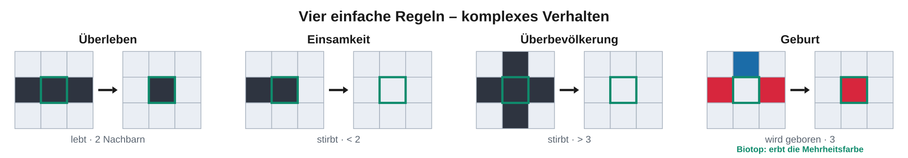
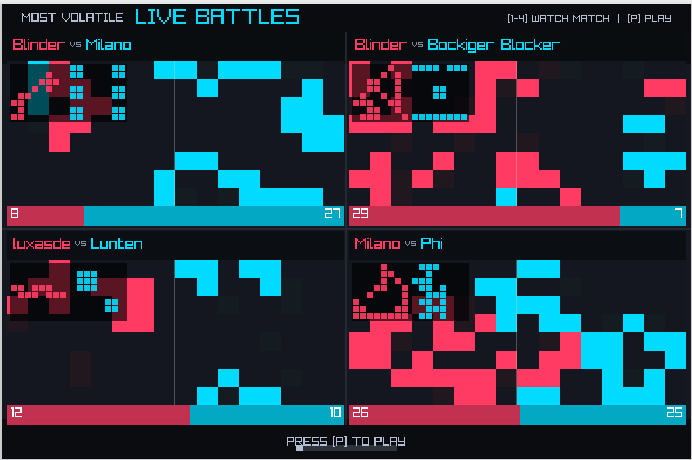
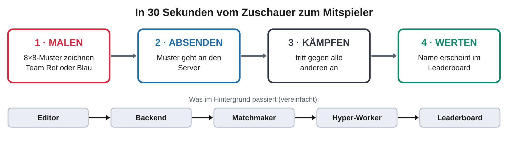
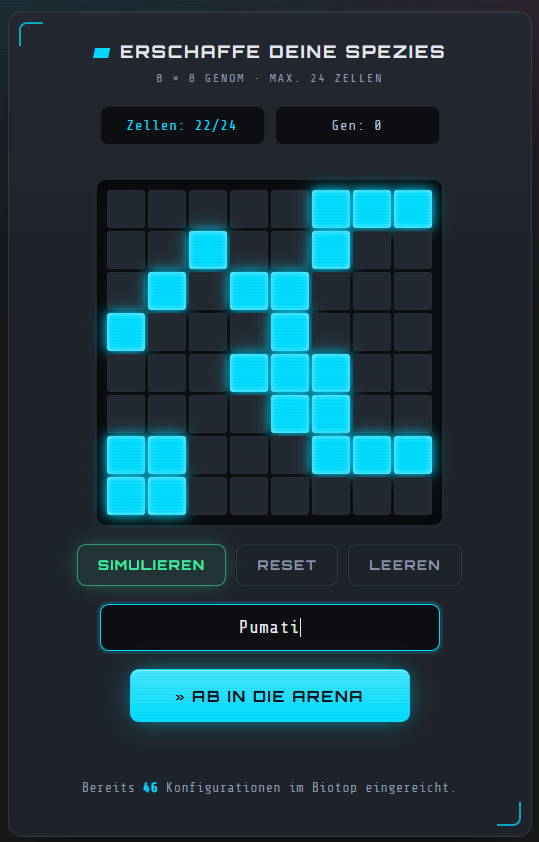
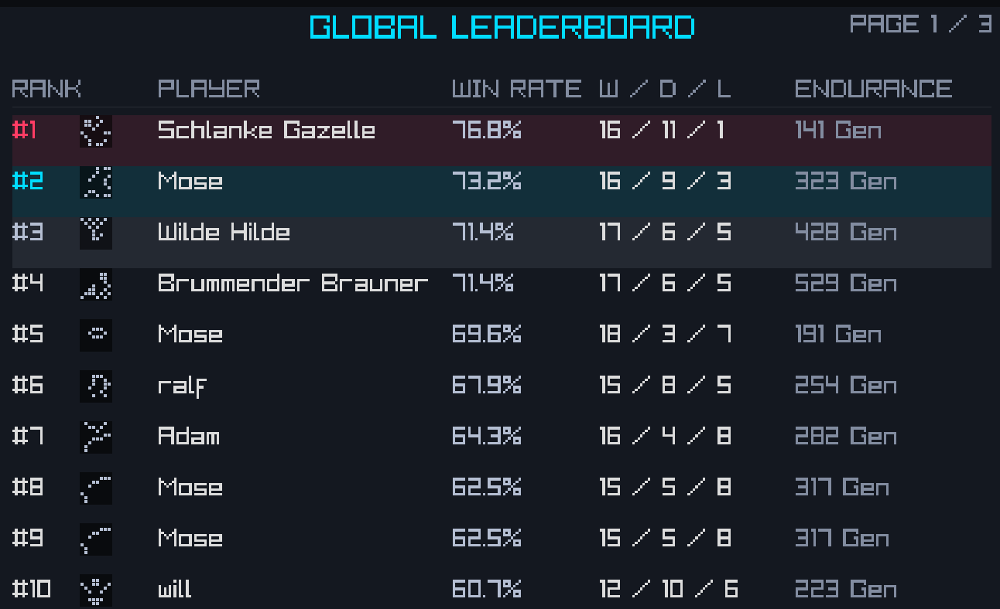
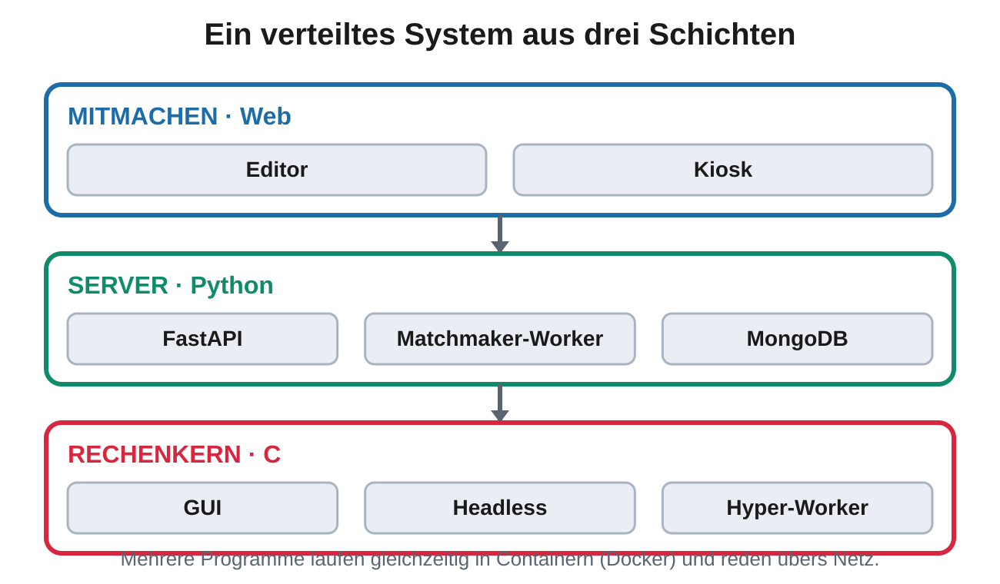
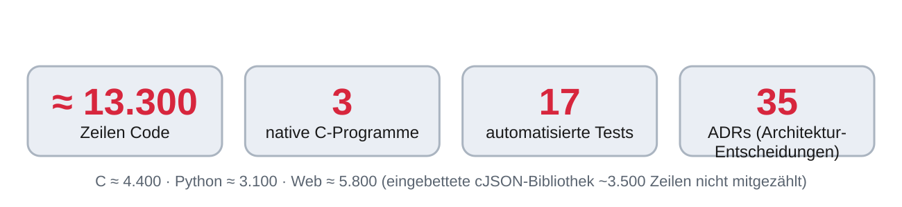

Conway's Game of Life erzeugt aus vier einfachen Regeln verblüffend komplexe Muster. Biotop macht daraus einen Wettkampf: Team Rot und Team Blau kämpfen auf einem Gitter um die Vorherrschaft.
Wie entsteht aus vier Regeln ein faszinierendes Spiel?
1FASZINATION
Komplexität aus vier Regeln: Wie entsteht Ordnung ganz von selbst?
Vier simple Regeln – und trotzdem entstehen Gleiter, Oszillatoren und Muster. Das nennt man Emergenz.


- Emergenz: komplexes Verhalten aus einfachen lokalen Regeln – ganz ohne zentrale Steuerung.
- 1970 von John Conway erfunden – sogar Turing-vollständig (man kann darin „rechnen").
2MITMACHEN
Erschaffen Sie das stärkste Biotop!
Ihr Muster. Live im Turnier. In Echtzeit in der Rangliste. Malen Sie in 30 Sekunden Ihr eigenes 8×8-Muster – es tritt sofort an.

Jetzt selbst
mitspielen →
mitspielen →
biotop.wiai-lab.de


3WIE IST DAS ENTSTANDEN?
Wie weit kommt ein Erstsemester, wenn Mensch und KI als Team programmieren?
Hinter BIOTOP steckt ein komplettes verteiltes System.

- Werkzeug für jede Schicht: Tempo in C, Komfort in Python, Zugänglichkeit im Web.
- KI als Teampartner, nicht Autopilot: Entscheidungen in Architektur-Notizen (ADRs) begründet, Code getestet (Ziel: null Compiler-Warnungen).

Projektweite Konvention: jede KI-unterstützte Stelle trägt im Code den Kommentar // KI-Agent unterstützt.